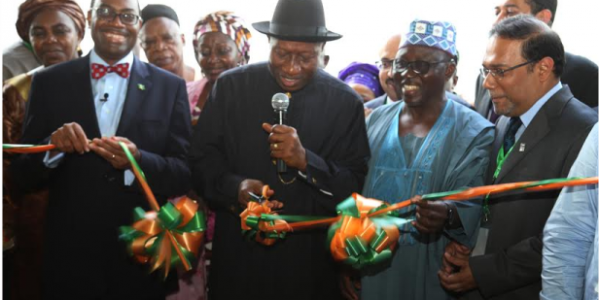

GEJ Grassroots Volunteers for Development (GEJ-GVD)
Home |
About us |
Activities |
Contact us |
Our partners |
Vision |

PARTNERSHIP
We work in partnership with like-minded organizations, So far with thefollowing bodies or organizations:
- Goodluck Ebele Jonathan Resource Centre (GEJ-RC)
- Federal Ministry of Youth Development
- U.S. War Hero Foundation (USWHF), USA.
- Chukwuoma Support Foundation (CSF).
- Women for Jonathan Volunteer Movement.
- Progressive Friends Foundation (PFF).
- South-South Chiefs & Elders’ Council (SSCEC), Abuja.
- Peoples Democratic Party, PDP Headquarters (WADATA HOUSE), Abuja.
- Office of the NC-GSG/Special Adviser to the President on PoliticalAffairs.
- Beemia Association of Ogoni.
- Niger Delta Intelligent Assessment Group.
BODIES AFFILIATED TO US:
- Virtuous People, Akwa Ibom State.
- Yakurr/Abi Rescue Forum (YARF).
- EKID Market Women Association.
- Akwa Ibom Rural Women Forum.
- Deewii Youth Association (DYA)